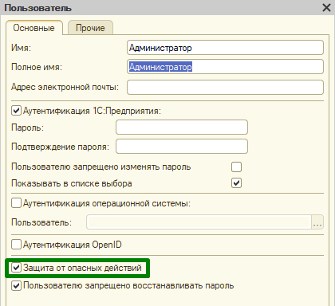

Вопросы и ответы¶
1. Как пропустить сценарий, чтобы он не падал?¶
- Можно его закомментировать в тексте фичи (символ
#) - Можно поставить сценарию тег - и использовать теги фильтры
- Да пусть падает, тем более если он не реализован - то он будет желтым, а если реализован - тогда почему он падает?
2. Как запустить фичу из поставки VA у себя в базе?¶
- Большинство фич, которые идут в поставке
VA, требуют, чтобы их запускали в специальной служебной базе. - Надо собрать служебную базу. Для этого надо загрузить CF из (
.\vanessa-behavoir\lib\CF\83) - Надо руками в базе установить константу
Путь к Vanessa Behavior- это полный путь к обработкеVanessa-behavior.epfвключая имя файла - Надо открыть в базе
VA - Надо указать тег исключение
IgnoreOnCIMainBuild(список исключаемых тегов) - Для ОФ надо ещё указать тег
IgnoreOnOFBuilds - После этого можно загружать все фичи из каталога фич и запускать на выполнение
3. Как мне удалить в транзакции созданные данные?¶
- В
BDDнеобязательно их удалять за собой - Если всё же хотите, Вы можете гарантированно удалить их в процедуре
ПередОкончаниемСценария(). Она срабатывает в любом случае, даже если сценарий упал - Если создавались данные из макета (
Данные = Ванесса.СоздатьДанныеПоТабличномуДокументу(Макет)), то можно использовать методВанесса.УдалитьСозданныеДанные(Данные) - Лучше стремиться к тому, чтобы сценарий сам обеспечивал себе окружение, чтобы успешно выполниться
4. Где мне лучше создавать служебные данные для выполнения сценария?¶
- В секции
Контекстfeature файла - В процедуре
ПередНачаломСценария()
5. Если в сценарии возникла ошибка, модальное окно и т.д. - как мне гарантированно закрыть все эти окна, чтобы следующий сценарий не падал?¶
- В секции
Контекстнадо добавить шагИ Я закрываю все окна клиентского приложения. А ещё лучше создать экспортный сценарий и в него добавть этот шаг. А в секцииКонтекствызывать экспортный сценарий
6. Как проверять поведение системы под разными ролями?¶
- Надо запустить несколько
TestClientна разных портах и переключаться между ними
7. Как сохранять скриншоты при ошибках сценариев?¶
- Интерактивная настройка: Закладка
Сервис-> далееАвтоинструкции-> полеКонсольная команда создания скриншотов-> после строки команды вставляется имя файла, и в таком виде команда запускается - ПО для скриншотов (важно только устанавливать 32-разрядные версии)
- NirCMD (команда
nircmd savescreenshot)- Пример json-файла настройки фиксации скриншотов
IrfanView(команда"C:\Program Files (x86)\IrfanView\i_view32.exe" /capture=1 /convert=)- Пример json-файла настройки фиксации скриншотов
8. На CI сервере скриншот формируется, но вместо изображения чёрный экран¶
- Запускать агент
Jenkinsв режиме сервиса нельзя. На CI надо настроить автовход под какой-либо учётной записью и в автозагрузку поместить команду запуска агентаJenkins - Надо посмотреть
схему энергосбереженияв панели управления, там может стоять отключение дисплея через пару минут. Это надо выключить - Проблема «чёрного экрана» чаще всего связана с использованием
RDP. При закрытии окнаRDPсеанс переходит в состояние «отключено», графическая оболочка перестает выводиться, и на скриншотах появляется черный экран. Для решения этой проблемы существует два подхода:- Полный отказ от
RDP: используйте другой софт для удаленного доступа к серверу, который не гасит видеокарту при отключении, напримерTightVNC - Корректное завершение
RDP-сессии: чтобы сохранить активную графическую среду, необходимо корректно завершатьRDP-сессию, переключая ее на локальную консоль:- Определить
ID текущего сеанса. Выполнить команду на удаленном сервере: - Переключить сеанс на консоль. Выполнить следующую команду от имени
Администратора, указав найденныйID текущего сеанса: - После выполнения команда корректно отключает
RDP, сохраняя при этом активную графическую среду на локальной консоли. Это исключает проблему черного экрана на скриншотах во время автотестов
- Определить
- Полный отказ от
9. Почему у меня не работает тэг @tree?¶
- Для работы тега @tree надо использовать либо только табы, либо только пробелы. В пределах одной фичи нельзя в отступах строк использовать и пробелы и табы
10. Как поставить брейкпоинт во внешней обработке?¶
- Для файловых баз брейкпоинты работают сразу
- Для серверных баз, когда сервер 1С и сеанс
TestManagerрасположены на разных ПК- Надо закрыть сеанс
TestManager - Надо открыть сеанс
TestManager - Надо открыть через меню
файл -> открыть обработку, в которой стоит брейкпоинт - Только после пункта 3 надо открыть
Vanessa-Behavior
- Надо закрыть сеанс
11. Нужно ли запускать сеанс TestManager из конфигуратора для отладки?¶
- Да - лучше запускать из конфигуратора, а не подключаться потом, т.к. в платформе есть ошибка, из-за которой могут не работать брейкпонты в серверном коде, если конфигуратор был подключен к уже ранее запущенному сеансу
TestManager
12. Я подключаюсь по RDP к серверу. И фича выполняется нормально, но если свернуть окно RDP, то возникает ошибка¶
- Это связано с особенностью платформы 1С. Некоторые методы платформы (кнопконажималки) не работают, когда погашена видеокарта (а
RDPклиент её гасит, когда вы его сворачиваете). Поэтому не надо использоватьRDPдля доступа к CI (или другим) серверам, когда вы хотите использоватькнопконажималку
13. Я вызвал метод Ванесса.ЗапретитьВыполнениеШагов(), затем я подключаю свой таймер, как мне сделать, чтобы шаг упал?¶
- В этом случае вместо вызова исключения надо сделать
Ванесса.ПродолжитьВыполнениеШагов(Истина)
14. Появляется ошибка, в которой есть текст: Неизвестный идентификатор формы¶
- Это означает, что, скорее всего, в одном сеансе открывались разные версии
Vanessa Automation - Нужно перезапустить текущий сеанс 1С или перезапустить сервер 1С
- Также помогает очистка кеша клиента и кеша сервера
15. Если вы используете версию платформы 8.3.9.2033 или новее, тогда может появиться окно Предупреждение безопасности¶
- Подробное описание механизма
- Если хотите выключить этот механизм для всех баз - пропишите в файле
conf.cfgстрокуDisableUnsafeActionProtection=.* - Также можно снять флаг
Защита от опасных действийдля конкретного пользователя
16. Как использовать Sikuli-скрипты? (устаревшее)¶
- Установите
SikuliXсогласно инструкции - Ознакомьтесь с инструкцией Запуск SikuliX из командной строки
- Укажите через path путь к каталогу с runsikulix(.cmd);
- Разрабатывайте свои Sikuli-скрипты с помощью SikuiliX IDE, либо используйте имеющиеся
- Выполнение скрипта в реализации шага вызывайте через
Ванесса.ВыполнитьSikuliСкрипт()
17. Как получить отчет Allure у себя на компьютере под Windows?¶
- Cкачать дистрибутив Allure
- Надо прописать в
Path каталог, где лежитallure.bat - Вызвать команду
call allure generate <каталог где лежат ваши xml в формате Allure> - Вызвать команду
call allure report open
18. Как при возникновении ошибки на CI получить скриншоты всех окон 1С?¶
- Пока эта фича работает только под Windows
- Надо в json файле, в котором указываются параметры запуска
Vanessa-Behavior, указать строку:"СниматьСкриншотКаждогоОкна1С": "Истина" - Надо установить на CI сервер
java 8(если у васJenkins- то скорее всего она у вас уже есть) - Надо установить SikuliX версии 1.1 или выше (скачать
sikulixsetup-1.1.1.jar.) - Надо чтобы файл
runsikulix.cmdбыл прописан в переменнойPATH.=
19. Как вызвать Исключение в серверной Процедуре/Функции?¶
- Надо создать экземпляр объекта обработки
VanessaAutomation. Например, так:
20. Не срабатывает шаг И я нажимаю на кнопку выбора у поля "ИмяПоля"¶
- Такие шаги сначала пытаются активизировать поле, а затем нажимают на кнопку выбора у поля
- Если у поля назначен обработчик при активизации поля, то шаг может не сработать и его надо заменить на шаг активизации поля
21. Как сделать в подсценарии необязательный параметр?¶
- Вот пример когда в сценарии объявлен параметр
ДопПараметр, и он является необязательным - Далее переданное значение сохраняется в параметр
ЗначениеПараметра, и затем идёт проверка его значения
22. Как запустить тесты в браузере?¶
- Опубликовать базу
- Задать любое имя подключения
- Указать тип подключения
WEB - В
строке соединенияуказать правильную ссылку, которая начинается наhttpилиws. - Для файловой базы надо указать
порт web сервера(обычно это1538). Для серверной базы надо указать имя сервера и порт кластера (обычно1541) - Т.е.
TestManagerобщается с браузером либо через веб сервер для файловых баз, либо через сервер кластера для серверных баз.
23. Как запомнить навигационную ссылку?¶
- Для всех окон
- (Устарело) Также можно использовать внешнюю компоненту, например, так:
И я закрываю все окна клиентского приложения И В командном интерфейсе я выбираю 'Основная' 'Справочник1' Тогда открылось окно 'Справочник1' И в таблице "Список" я выбираю текущую строку И я нажимаю сочетание клавиш "Ctrl+F11" И я нажимаю на кнопку с именем "BtnCopy" И я жду закрытия окна "Получение ссылки" в течение 20 секунд И Я запоминаю значение выражения 'Ванесса.БуферОбмена.Текст' в переменную "НавСсылка"
24. Как отключить появление окна, при падении в дамп процесса 1С на Windows?¶
- Нужно в реестре установить значения параметров
- DontShowUI
- ShutdownReasonOn
- ShutdownReasonUI
25. Как настроить сбор дампов на раннере?¶
- Надо в каталоге
C:\Program Files (x86)\1cv8\confсоздать файлlogcfg.xmlс таким содержимым (если его нет) или дополнить файл, если он есть: - Для проверки формирования дампов достаточно создать обработку с бесконечным рекурсивным вызовом:
26. Как сделать из обычного шага шаг-условие?¶
- Обязательно использовать ключевое слово
Если(Ifдля английского языка), в конце шага добавить словоТогда(Thenдля английского языка):
27. Как при запуске тестов на CI сервере отключить инициализацию редактора в процедуре ПриСозданииНаСервере()?¶
- Для этого надо в базе, где запускается
Vanessa Automationдобавить константуИнициализировать VanessaEditor, типБулевои установить её вЛожь
28. Как ускорить работу Vanessa Automation при локальной работе?¶
- Если в конфигурации, в которой происходит локальный запуск
Vanessa Automationзапрещены синхронные вызовы, то лучше запускать сеанс 1С не из конфигуратора - Конфигуратор предаёт дополнительные ключи сеансу 1С при запуске
/EnableCheckExtensionsAndAddInsSyncCalls, которые полностью запрещают использование синхронных вызовов. Из-за этогоVanessa Automationбудет использовать более медленные алгоритмы при работе с файлами. Если же запустить сеанс не из конфигуратора, тоVanessa Automationсможет использовать синхронные вызовы, несмотря на то, что в настройках конфигурации они запрещены. При этом можно подключиться конфигуратором к данному сеансу 1С отладчиком, и работать как будто этот сеанс запущен из конфигуратора
29. Как передавать сложные строки через переменные для использования во встроенном языке?¶
- Примеры:
# Первый вариант И я запоминаю содержимое файла "C:\Temp\Untitled-2.xml" в переменную "ИмяПеременной1" И я выполняю код встроенного языка на сервере """bsl Сообщить("$ИмяПеременной1$"); """ # Второй вариант И я запоминаю содержимое файла "C:\Temp\Untitled-2.xml" в переменную "ИмяПеременной" # Сохраняем значение переменной в специальный реквизит Объекта. Код выполняется на клиенте. И я выполняю код встроенного языка """bsl Ванесса.Объект.ЗначениеНаСервере = Контекст.ИмяПеременной; """ # Используем переданное значение в серверном коде. Код выполняется на сервере. И я выполняю код встроенного языка на сервере """bsl Сообщить(Объект.ЗначениеНаСервере); Объект.ЗначениеНаСервере = "Новое значение"; """ # Возвращаем в переменную значение, обновленное в контексте сервера. Код выполняется на клиенте. И я выполняю код встроенного языка """bsl Контекст.ИмяПеременной = Ванесса.Объект.ЗначениеНаСервере; """
30. Для использования функционала UI Automation, при создании инструкций, откуда и как получать значения Имя, Тип и PID?¶
- Надо установить
windows sdk - Появится файл вида
C:\Program Files (x86)\Windows Kits\10\bin\10.0.19041.0\x64\inspect.exe- это инспектор объектовUI Automation - Альтернативный инспектор объектов
31. Как передать значение переменной с клиента на сервер, затем изменить значение на сервере и вернуть новое значение обратно в переменную?¶
- Примеры:
# 1. Значение помещается в переменную И я запоминаю строку "НужнаяСтрока" в переменную "ИмяПеременной" # 2. Значение переменной помещается в Объект в специальный реквизит ЗначениеНаСервере И я выполняю код встроенного языка """bsl Ванесса.Объект.ЗначениеНаСервере = Контекст.ИмяПеременной; """ # 3. Теперь значение переменной доступно на сервере. И там его можно изменить. И я выполняю код встроенного языка на сервере """bsl Сообщить(Объект.ЗначениеНаСервере); Объект.ЗначениеНаСервере = "Новое значение"; """ # 4. Полученное значение помещается из Объекта в обычную переменную И я выполняю код встроенного языка """bsl Контекст.ИмяПеременной = Ванесса.Объект.ЗначениеНаСервере; """
32. Какая Версия платформы и Режим совместимости должны использоваться для работы редактора VAEditor?¶
- Версия платформы:
8.3.14или выше - Режим совместимости:
8.3.7или выше
33. Как правильно добавить новую настройку Vanessa Automaion?¶
- Нужно добавить новый реквизит к объекту обработки
Vanessa Automaion. - Прописать реквизит в
Форма ОбщегоНазначенияVA->КоллекцияКомандЗапуска()->Форма УправляемаяФорма->ИменаКлючейОбщихНастроек()->Модуль объекта->СтруктураОбщихНастроек()
34. Тест "Проверка, что для каждого элемента формы есть урок" выдаёт исключение об элементе формы, по которому не должно быть уроков¶
- Тест надо добавить в исключения в методе
ЭтотЭлементЯвляетсяИсключением(), который находится вfeatures\Libraries\VB\step_definitions\ТестированиеVA.epf
35. Какой параметр отвечает за путь к Vanessa Automation при использовании утилиты vrunner?¶
- Параметр
--pathVanessa, где указан путь к обработкеVanessa-automation.epfилиVanessa-automation-single.epf
36. Альтернативные варианты установки внешней компоненты VanessaExt¶
- Когда компонента ставится в каталог
%APPDATA%\1C\1Cv8\ExtCompTв нём появляются определенные файлы, связаные с компонентой. Подробнее тут. Если эти файлы положить в этот катлог заранее, до запуска сеанса 1С, то компонента будет считаться установленной - Можно перед запуском тестов сделать дополнительный запуск
VA, в котором будет выполнен сценарий УстановкаКомпонентыVanessaExt.feature. Этот сценарий запускает клиент тестирования, открывает в нём другой экземплярVAи включает компоненту. После этого следующие запуски тестов будут считать, что компонента уже установлена
37. Какие шаги использовать для работы с меню Выбор из списка в 1С?¶
- В платфоме есть два метода, чтобы показать пользователю выбор из списка (меню):
ПоказатьВыборИзСписка()ПоказатьВыборИзМеню()
- Визуально результат может не отличаться, но с точки зрения API автотестов это разные сущности
- Для работы с
Менюесть свои шаги: - Для работы со
Cпискоместь свои шаги:
38. Как проверить значение в таблице, когда заголовок колонки заранее не известен?¶
- Можно запомнить заголовок колонки в переменную и далее её использовать:
39. Как сделать смену Даты во время выполнения сценария, чтобы это не приводило к падению сценария?¶
- Правильно сделать так, чтобы сценарий не был чувствителен к смене даты
- Если так сделать не получается, то надо использовать конструкцию вида
- Эти шаги замедлят выполнение сценария, но позволят избежать смены даты во время его работы
40. Как сделать, чтобы тест запускался только на тегированных сборках (Gitlab CI)?¶
- Может возникнуть задача, чтобы часть тестов запускалась только на сборках, помеченных тегами
- Для этого надо использовать такие шаги:
41. Как сделать, чтобы завершение Серверного вызова не затирало текст в Редактируемом поле?¶
- Чтобы отключить в текущей форме надо использовать шаг
- Чтобы отключить для всех окон клиента тестирования надо включить настройку
Vanessa Automation - В этом случае при каждом вызове шага
Тогда открылось окнобудет изменяться свойствоОбновлениеТекстаРедактированияу полей текущей формы клиента тестирования - Также можно в
Конфигураторе/EDTпоставить полю свойствоОбновлениеТекстаРедактированияв значениеОбновлениеТекстаРедактирования.ПриИзмененииЗначения - Подробнее эта проблема описана тут пункт
7.7.4.2. Обновление отображаемых данных
42. Как прочитать Значение из Переменной среды?¶
- Например, чтобы не хранить логины и пароли внутри сценария.
- Для этого нужно прочитать значение из переменной среды в обычную переменную сценария
43. Как программно определить в каком интерфейсе запущен сеанс 1С?¶
- Пример:
44. Как активизировать нужное окно, если в клиенте тестирования несколько окон с одинаковым заголовком?¶
- Чтобы решить такую задачу, нужно самостоятельно устанавливать окнам клиента тестирования уникальный заголовок
- Это можно сделать с помощью шага:
45. Как убрать окошко остановки выполнения сценария в верхней части экрана?¶
- Для этого надо перейти в
Сервис->Выполнение сценариев-> Снять флагПоказывать окно остановки выполнения сценария